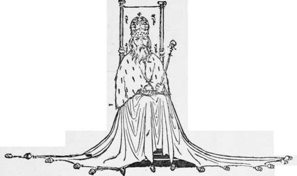
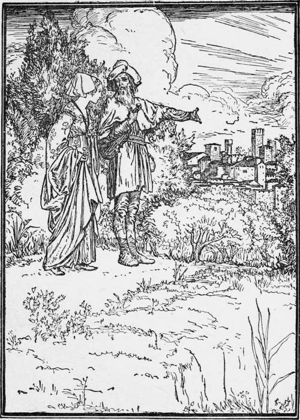

King Guzzle Beard
Description
This section is from the book "Household Tales by Brothers Grimm", by Brothers Grimm. Also available from Amazon: Household Tales by Brothers Grimm.
King Guzzle Beard
A great king of a land far away in the East had a daughter who was very beautiful, but so proud, and haughty, and conceited, that none of the princes who came to ask her in marriage were good enough for her, and she only made sport of them.
Once upon a time the king held a great feast, and asked thither all her suitors; and they all sat in a row, ranged according to their rank,—kings, and princes, and dukes, and earls, and counts, and barons, and knights. Then the princess came in, and as she passed by them she had something spiteful to say to every one. The first was too fat: "He's as round as a tub," said she. The next was too tall: " What a maypole!" said she. The next was too short: "What a dumpling!" said she. The fourth was too pale, and she called him " Wallface." The fifth was too red, so she called him " Coxcomb." The sixth was not straight enough; so she said he was like a green stick, that had been laid to dry over a baker's oven. And thus she had some joke to crack upon every one: but she laughed more than all at a good king who was there. "Look at him," said she; "his beard is like an old mop ; he shall be called Grizzle-beard." So the king got the nickname of Grizzle-beard.
But the old king was very angry when he saw how his daughter behaved, and how she ill-treated all his guests; and he vowed that, willing or unwilling, she should marry the first man, be he prince or beggar, that came to the door.
Two days after there came by a travelling fiddler, who began to play under the window and beg alms ; and when the king heard him, he said, "Let him come in." So they brought in a dirty-looking fellow; and when he had sung before the king and the princess, he begged a boon. Then the king said, "You have sung so well, that I will give you my daughter for your wife." The princess begged and prayed; but the king said, "I have sworn to give you to the first comer, and I will keep my word." So words and tears were of no avail; the parson was sent for, and she was married to the fiddler. When this was over the king said, "Now get ready to go—you must not stay here—you must travel on with your husband."
Then the fiddler went his way, and took her with him, and they soon came to a great wood. "Pray," said she, "whose is this wood?" "It belongs to King Grizzle-beard," answered he; "hadst thou taken him, all had been thine." "Ah! unlucky wretch that I am! " sighed she; " would that I had married King Grizzle-beard! " Next they came to some fine meadows. "Whose are these beautiful green meadows?" said she. "They belong to King Grizzle-beard; hadst thou taken him, they had all been thine." "Ah! unlucky wretch that I am!" said she; "would that I had married King Grizzle-beard! "
Then they came to a great city. " Whose is this noble city ?" said she. " It belongs to King Grizzle-beard ; hadst thou taken him, it had all been thine." "Ah! wretch that I am!" sighed she; " why did I not marry King Grizzle-beard?" "That is no business of mine," said the fiddler: "why should you wish for another husband; am not I good enough for you ? "
At last they came to a small cottage. "What a paltry place!" said she; " to whom does that little dirty hole belong?" Then the fiddler said, "That is your and my house, where we are to live." "Where are your servants ?" cried she. " What do we want with servants ?" said he; "you must do for yourself whatever is to be done. Now make the fire, and put on water and cook my supper, for I am very tired." But the princess knew nothing of making fires and cooking, and the fiddler was forced to help her. When they had eaten a very scanty meal they went to bed; but the fiddler called her up very early in the morning to clean the house. Thus they lived for two days: and when they had eaten up all there was in the cottage, the man said, "Wife, we can't go on thus, spending money and earning nothing. You must learn to weave baskets." Then he went out and cut willows, and brought them home, and she began to weave; but it made her fingers very sore. " I see this work won't do," said he: " try and spin ; perhaps you will do that better." So she sat down and tried to spin; but the threads cut her tender fingers till the blood ran. "See now," said the fiddler, "you are good for nothing; you can do no work : what a bargain I have got! However, I'll try and set up a trade in pots and pans, and you shall stand in the market and sell them." " Alas! " sighed she, " if any of my father's court should pass by and see me standing in the market, how they will laugh at me!"
But her husband did not care for that, and said she must work, if she did not wish to die of hunger. At first the trade went well; for many people, seeing such a beautiful woman, went to buy her wares, and paid their money without thinking of taking away the goods. They lived on this as long as it lasted; and then her husband bought a fresh lot of ware, and she sat herself down with it in the corner of the market; but a drunken soldier soon came by, and rode his horse against her stall, and broke all her goods into a thousand pieces. Then she began to cry, and knew not what to do. " Ah ! what will become of me?" said she; "what will my husband say?" So she ran home and told him all. "Who would have thought you would have been so silly," said he, "as to put an earthenware stall in the corner of the market, where everybody passes? But let us have no more crying; I see you are not fit for this sort of work, so I have been to the king's palace, and asked if they did not want a kitchen-maid; and they say they will take you, and there you will have plenty to eat."
Thus the princess became a kitchen-maid, and helped the cook to do all the dirtiest work; but she was allowed to carry home some of the meat that was left, and on this they lived.
She had not been there long before she heard that the king's eldest son was passing by, going to be married; and she went to one of the windows and looked out. Everything was ready, and all the pomp and brightness of the court was there. Then she bitterly grieved for the pride and folly which had brought her so low. And the servants gave her some of the rich meats, which she put into her basket to take home.
The Princess and the Fiddler.
All on a sudden, as she was going out, in came the king's son in golden clothes; and when he saw a beautiful woman at the door, he took her by the hand, and said she should be his partner in the dance; but she trembled for fear, for she saw that it was King Grizzle-beard, who was making sport of her. However, he kept fast hold, and led her in; and the cover of the basket came off, so that the meats in it fell all about. Then everybody laughed and jeered at her; and she was so abashed, that she wished herself a thousand feet deep in the earth. She sprang to the door to run away; but on the steps * King Grizzle-beard overtook her, and brought her back and said, " Fear me not! I am the fiddler who has lived with you in the hut. I brought you there because I really loved you. I am also the soldier that overset your stall. I have done all this only to cure you of your silly pride, and to show you the folly of your ill-treatment of me. Now all is over: you have learnt wisdom, and it is time to hold our marriage feast."
Then the chamberlains came and brought her the most beautiful robes; and her father and his whole court were there already, and welcomed her home on her marriage. Joy was in every face and every heart. The feast was grand; they danced and sang ; all were merry; and I only wish that you and I had been of the party.
Continue to:
Tags
fairy tales, children's stories, brothers grimm, household tales